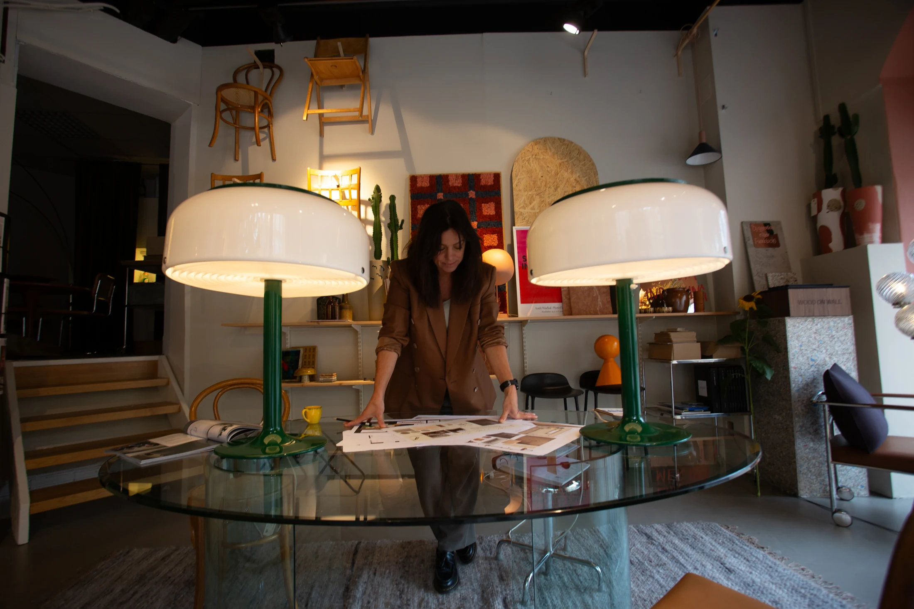
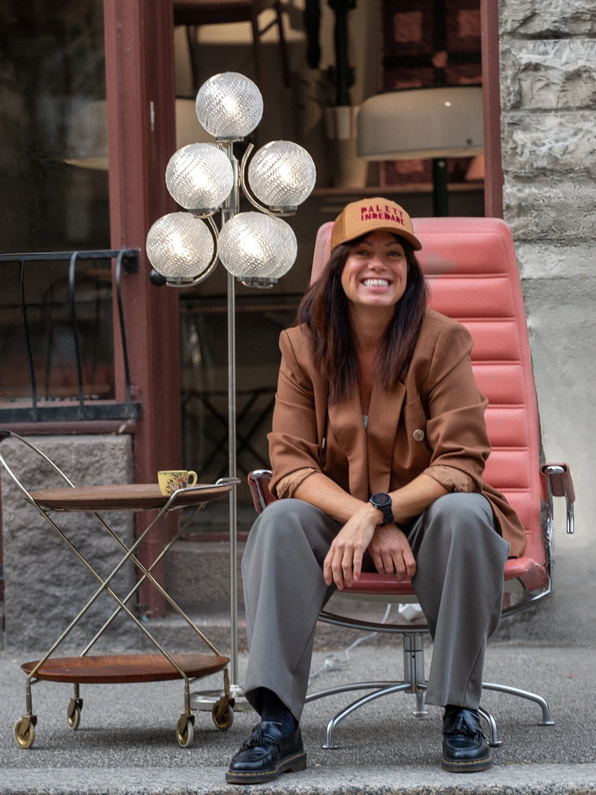
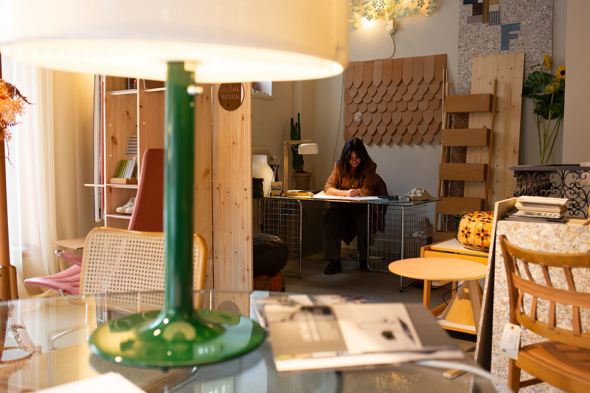

Inredningsstudio för hem & företag
Rum med
personlighet.
Färg, form och omtanke. Rebecka Widar skapar inredning som känns som du.
En värld av färg, form & vintage
Personlig inredning med Palett+Certifierad inredare
+Florist med gesällbrev
+Återbruk som en del av helheten
Det här är Palett
Det är detaljerna
som gör det till ditt.
Ett rum ska fungera, kännas och berätta något om människorna som använder det. Med blick för färg, material och det du redan har hjälper Palett dig att hitta helheten.
En palett av möjligheter.

Kontor och offentliga miljöerPalett Inredare
En närmare titt
Material. Möten.
Miljöer att minnas.


Människan bakom Palett
Hej, Rebecka här.
Jag ser möjligheter i färger, former och det som redan finns.
Som certifierad inredare och florist förenar jag två sätt att skapa. Det kan börja med en växt, en möbel med historia eller känslan du vill komma hem till.
Rebecka WidarGrundare · Inredare · Florist
Nytt liv.
Gamla favoriter.
Det oväntade fyndet kan bli rummets själ. Palett letar efter möbler och belysning med karaktär, och ser möjligheter i det du redan äger.
Upptäck vintagejägaren

”Jag vill skapa inredningar som känns och som berättar en historia.”Rebecka Widar, intervjuad i Villanytt
Från första tanke
till en helhet.
Samtalet
Vi börjar med dina behov, rummets förutsättningar och det du vill förändra.
Riktningen
Du får ett upplägg och en offert. Koncept, kulörer och material tar form.
Detaljerna
Förslaget utvecklas tillsammans med dig. Vi väljer vad som stannar och vad som tillkommer.
Ditt nya rum
Ritningar och val blir ett tydligt underlag. Genomförandet anpassas efter uppdraget.
Lite mer
att veta.
Kan jag få hjälp med bara ett rum?
Ja. Hjälpen anpassas efter uppdraget, från en avgränsad del av inredningen till en större helhet. Beskriv vad du vill förändra när du hör av dig.
Behöver jag köpa allt nytt?
Nej. Befintliga möbler är en del av utgångspunkten. Återbruk och utvalda vintagefynd kan ge rummet ett personligare uttryck.
Vad kostar ett inredningsuppdrag?
Upplägg och pris tas fram efter ett första samtal om dina behov. Du får ett förslag och en offert för just ditt projekt.
Arbetar Palett med både hem och företag?
Ja, tjänsterna omfattar privata bostäder, arbetsplatser och offentliga miljöer. Växtstyling och blomsterdekorationer kan ingå eller vara egna uppdrag.
Vad längtar ditt rum efter?
Berätta om dina idéer. Vi börjar med ett samtal om vad som skulle göra skillnad för dig.